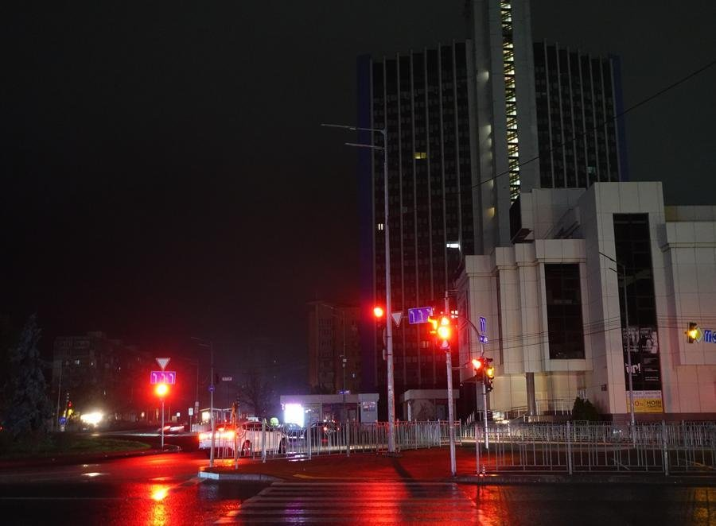
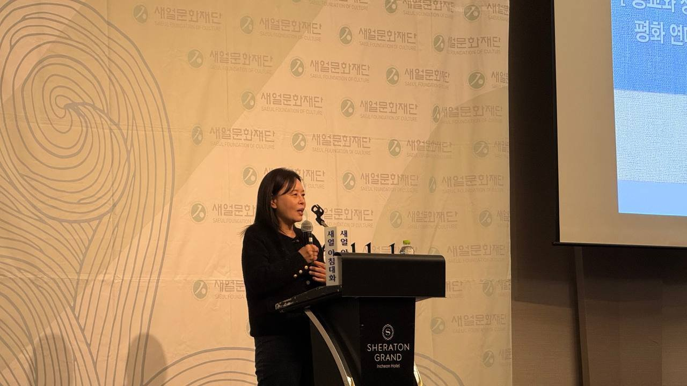

[심층] 김영미 PD가 꼬집은 「부동산 전쟁」, 종교와 사회의 욕망이 부른 우크라이나 비극
김영미 분쟁전문 PD, 제473회 새얼아침대화 강연
러시아 점령지 「주인 없는 집」 마리우폴 342곳
러시아, 하룻밤 드론 172대·탄도미사일 36발
AI경제저널=김갑봉 기자 | 김영미 분쟁전문 프리랜서 PD는 러시아·우크라이나 전쟁을 「부동산의 전쟁」이라고 꼬집었다. 점령하면 농장도 집도 명의를 바꿔 버린다는 것이다.
평화를 말해야 할 종교도, 땅에 집착하는 사회도 재산과 기득권을 놓고 싸운다는 비판이다. 김 PD는 그 값을 치르는 쪽은 민간인이라고 했다.
김 PD는 2026년 11월 11일 아침 인천 쉐라톤 그랜드 호텔에서 새얼문화재단이 연 제473회 새얼아침대화에 연사로 섰다. 강연 제목은 「종교와 정파를 넘어서는 평화 연대의 현장」이었다. 그는 우크라이나와 팔레스타인 취재를 마치고 돌아온 길이었다.

총구 앞에 선 정교회 신부들
김 PD가 우크라이나를 처음 찾은 때는 2014년 마이단 혁명이었다. 친러 정부에서 벗어나 민주주의 국가를 세우려는 시민들이 거리로 나왔다.
그는 전쟁터라는 생각도 없이 갔다가 시위대를 향한 발포를 눈앞에서 봤다. 방탄조끼도 없었다.
김 PD는 그날 50명 안팎이 숨졌다고 기억했다. 이튿날 그는 서둘러 방탄조끼를 구했다. 많은 외신 기자들과 함께 100명이 죽을 수도 있다고 각오하고 현장에 나갔다.
그때 우크라이나 정교회 신부들이 시위대와 군경 사이로 들어와 가운데를 막아섰다. 김 PD에 따르면 신부들은 시민에게 총을 쏘는 것을 종교가 용납하지 않는다고 말했다. 그는 피가 흐르는 현장에서도 종교가 갈등을 봉합할 수 있다는 것을 봤다고 했다.
그 정교회가 전쟁으로 두 쪽이 났다. 김 PD는 러시아 쪽과 우크라이나 쪽으로 교회가 갈라졌고, 우크라이나 정교회가 성탄절을 1월 7일에서 12월 25일로 옮겼다고 설명했다.
그는 "설전이 오갔으면 괜찮았는데 탄도 미사일들이 날아오는 거죠"라고 말했다. 지금도 양쪽 신부들이 전쟁 못지않게 치열하게 싸운다고 그는 전했다.
김 PD는 같은 가치를 믿는 종교가 왜 싸우는지 물었다. 그가 찾은 답은 기득권과 재산이었다. 재산적 가치가 붙을 때 싸움이 터진다는 것이다.
집문서만 들고 걸어 나온 마리우폴
김 PD가 꼽은 도시는 돈바스의 항구 마리우폴이다. 그는 마리우폴이 자신이 취재한 도시 가운데 손꼽을 만큼 아름다웠다고 했다. 발레와 오페라가 있던 도시였다.
개전 초기 러시아와 우크라이나는 이 도시의 아조우스탈 제철소를 두고 결사 항전을 벌였다. 우크라이나는 도시를 잃었다.
민간인 사상자가 늘자 바깥으로 나가는 인도적 통로가 열렸다. 김 PD에 따르면 피란민은 차도 큰 가방도 없이 걸어서 나가야 했다.
냉장고도 세탁기도 두고 나온 사람들이 꼭 챙긴 것은 집문서였다. 재산적 가치가 있는 물건은 들고 나올 수 없었다.
전쟁 3년째 되던 해 한 피란민이 외신 기자들이 머무는 호텔로 김 PD를 찾아왔다. 젊어서부터 고생해 모은 돈으로 마리우폴에 아파트 15채를 사서 세를 놓던 사람이었다.
그는 세입자를 두고 나와 집이 걱정된다며 집문서 뭉치를 내밀었다. 집이 어떤지 알아봐 달라는 부탁이었다. 김 PD는 러시아 쪽에 연락해 주소를 하나하나 확인했다.
집은 대부분 미사일 피해를 피했다. 그런데 러시아가 도시를 점령한 뒤 새 문서를 발행해 집은 이미 팔렸고, 러시아 가족이 살고 있었다.
김 PD는 그가 "평생에 내가 모아온 재산인데 부동산에 투자한 게 잘못된 건가" 하며 펑펑 울었다고 전했다.
「주인 없는 집」 몰수
국제 인권단체 휴먼라이츠워치(HRW)는 2026년 5월 26일 러시아가 점령지에서 민간인 재산을 불법으로 빼앗는다고 발표했다.
HRW에 따르면 러시아법으로 재등록하지 않은 집은 「주인 없는 집」으로 지정된다. 재등록은 사실상 러시아 여권이 있어야 할 수 있다.
주인은 30일 안에 직접 나와야 하고, 지정에 이의를 낼 수 있는 사람도 러시아 여권 소지자뿐이다. 법원은 주인을 알 수 있는데도 소유권을 시에 넘긴다.
HRW는 유엔 인권감시단 집계를 인용해 2025년 11월까지 점령 당국이 3만8000곳 넘는 부동산을 「버려진 재산 후보」로 분류했다고 밝혔다. 이 가운데 도네츠크·루한스크에서 5557곳이 공식 지정됐다.
러시아 당국은 2025년 8월 서류가 없어 지정 위험에 놓인 부동산이 55만곳이라고 밝혔다. HRW가 확인한 재산 몰수 소송은 2024년 3월부터 2026년 1월까지 8000건가량이다.
마리우폴에서는 2025년 12월 342곳이 「주인 없는 집」으로 지정됐다.
빼앗은 아파트에는 새 주민이 들어오기 시작했다. HRW는 자국 민간인을 점령지로 옮기는 일이 로마규정이 정한 전쟁범죄라고 지적했다.
HRW 연구원 크세니야 크비트카는 6월 30일 기고에서 피란한 주인이 돌아오기 어렵다고 썼다. 모스크바 셰레메티예보 공항의 「여과」 심사에서 대부분 입국을 거부당한다는 것이다.
드론 172대, 실험실이 된 전쟁터
김 PD는 이번 취재 주제가 우크라이나의 AI 무기였다고 소개했다. 그는 AI를 손대는 사업마다 돈을 벌고, 가장 눈에 띄게 돈을 버는 분야가 무기라고 했다.
김 PD는 "전쟁은 돈을 버는 일이에요"라고 말했다. 그는 우크라이나 전쟁터가 미국 빅테크 자본의 실전이자 실험실이 됐다고 했다.
신화통신은 11월 8일 러시아가 6일 밤부터 7일 새벽까지 드론 172대와 탄도미사일 36발로 우크라이나를 공격했다고 우크라이나 매체를 인용해 보도했다. 같은 보도에서 러시아 국방부는 우크라이나의 군사용 로봇 시스템과 드론 생산·보관 시설을 타격했다고 밝혔다.
미국 전략국제문제연구소(CSIS)의 카테리나 본다르는 2025년 3월 보고서에서 우크라이나가 2024년 AI 드론 1만대를 사들이기 시작했다고 썼다.
같은 해 만든 드론 200만대에 견주면 0.5% 수준이다. 본다르는 자율 항법이 타격 성공률을 10~20%에서 70~80%로 높인다고 추산했다. 보고서는 완전 자율 전쟁은 아직 목표에 머물러 있다고 결론지었다.
김 PD는 전쟁으로 희생되는 사람은 민간인이라고 말했다. 무기를 쥔 결정권자는 쉽게 죽지 않는다는 것이다. 그는 세계가 가까워져 한국도 이 전쟁의 영향을 받고 있다고 했다.

「왜 나는 우크라이나에 태어났을까요」
김 PD는 이번 취재에서 만난 우크라이나 초등학생의 질문을 전했다. 아이는 "왜 나는 우크라이나에 태어났을까요"라고 물었다.
한국에 아들이 있다는 말을 듣자 아이는 그 아들이 좋겠다고 했다. 김 PD는 아이를 안아 주며 어른이 되면 전쟁을 만들지 말라고 말해 줬다.
그는 아무 죄가 없는 아이에게 어른이 돼 주는 데 나라 이름은 필요 없다고 말했다.
김 PD는 수많은 죽음을 봤지만 아버지가 돌아가실 때는 또 달랐다고 했다. 사람은 겪어 보지 않은 일에 감이 오지 않는다는 것이다. 김 PD는 이런 상황을 그대로 보여 주는 것이 자신의 일이라고 말했다.
김 PD는 한국도 땅에 집착이 강하고 부동산에 예민한 사회라고 했다. 그는 "북한도 강남 땅이 비싸다는 걸 아는데"라고 했다. 집착이 갈 데까지 가면 저런 일이 생길 수 있다는 생각을 전쟁 취재 때마다 한다는 것이다. 인천공항에 들어설 때마다 그는 한국이 평화롭다는 것이 다행스럽다고 했다.
참고문헌
- CSIS(Kateryna Bondar), 「Ukraine's Future Vision and Current Capabilities for Waging AI-Enabled Autonomous Warfare」, 2025.3.6, https://www.csis.org/analysis/ukraines-future-vision-and-current-capabilities-waging-ai-enabled-autonomous-warfare
- Human Rights Watch, 「Ukraine: Russia Illegally Seizing Property in Occupied Areas」, 2026.5.26, https://www.hrw.org/news/2026/05/26/ukraine-russia-illegally-seizing-property-in-occupied-areas
- Human Rights Watch(Kseniya Kvitka), 「Russia is Bombing Ukrainians Out of Their Homes — Then Using Sham Courts to Steal Them」, 2026.6.30, https://www.hrw.org/news/2026/06/30/russia-is-bombing-ukrainians-out-of-their-homes-then-using-sham-courts-to-steal
- 신화통신, 「러시아 "우크라이나 139개 지역 목표물 타격"...우크라이나 "에너지시설 대규모 공격받아"」, 2026.11.8, 신화통신 한국어 서비스(협약)
[사진 출처]
- [사진1] 신화통신(협약) 「러시아 "우크라이나 139개 지역 목표물 타격"...우크라이나 "에너지시설 대규모 공격받아"」(2026.11.8) [사진2] 김갑봉
관련기사
- [심층] 얼굴 하나 쫓아 가족까지, 가자 학살의 AI 드론
- 나토 병력 1997년 수준 요구한 크렘린, 선전 첫 미·중·러 정상회동 준비
- 러·우 종전협상 재개, 러 '대륙 안보'·우 '즉각 휴전'
- 민주당 상원 54석에도 '재의결 3분의 2' 벽
저작권자 © AI경제저널 무단전재 및 재배포, AI학습 및 활용 금지